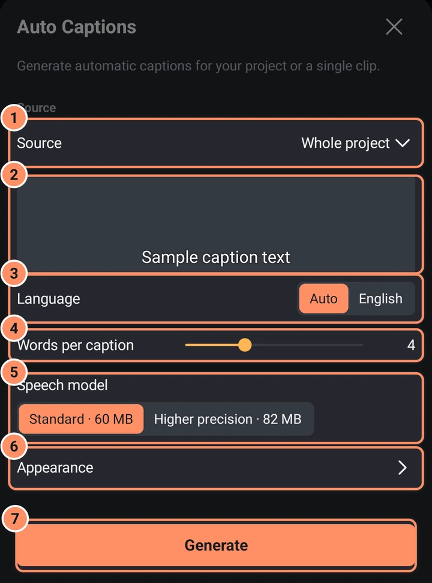

AI टूल्स
ऑटो कैप्शन, बैकग्राउंड हटाना, नॉइज़ कम करना, AI एन्हांस और AI Smooth। ये आपके फ़ोन पर, ऑफ़लाइन चलते हैं, और पेज ठीक-ठीक बताता है कि क्या डाउनलोड होता है।
इस पेज पर
इस पेज की हर चीज़ आपके डिवाइस पर चलती है। आपकी तस्वीरें, वीडियो और आवाज़ कभी अपलोड नहीं होते। सिर्फ़ वही डाउनलोड होते हैं जो अंत की तालिका में दिए गए हैं।
AI टूल्स तीन जगह हैं: इफ़ेक्ट लाइब्रेरी की AI कैटेगरी (बैकग्राउंड हटाएं, बैकग्राउंड हटाएं (वीडियो), नॉइज़ कम करें और एन्हांस), Add मेन्यू का कैप्शन बटन, और AI Smooth, जो किसी क्लिप के स्मूद टूल और एक्सपोर्ट स्क्रीन पर स्मूदिंग तरीकों में से एक है। ऑडियो या वीडियो क्लिप के लिए, AI > ऑटो कैप्शन सिर्फ़ उसी क्लिप के कैप्शन बनाता है। ऑडियो क्लिप में AI > नॉइज़ कम करें भी होता है। जो टूल चुनी गई लेयर पर लागू नहीं होता, वह ग्रे दिखता है और उस पर "एक इमेज लेयर चुनें" जैसा नोट होता है। एक बार में एक ही AI काम चलता है, प्रोग्रेस बार और रद्द करें बटन के साथ।
ऑटो कैप्शन
ऑटो कैप्शन बोली को टेक्स्ट लेयर में बदलता है, जो आवाज़ के साथ सही समय पर दिखती हैं।
- ऑडियो या वीडियो क्लिप चुनें, फिर AI > ऑटो कैप्शन पर टैप करें। वीडियो क्लिप में टूल ग्रिड के पेज 2 पर ऑटो कैप्शन बटन भी होता है। यह सिर्फ़ उसी क्लिप पर काम करता है, उसके ट्रिम और स्पीड बदलावों समेत।
- पूरे प्रोजेक्ट के कैप्शन बनाने के लिए, + > कैप्शन पर टैप करें और पूरा प्रोजेक्ट चुनें। यह एंट्री आपको एक ऑडियो या वीडियो लेयर चुनने भी देती है।
- नीचे सेटिंग्स चुनें और जनरेट करें पर टैप करें।

| सेटिंग | विकल्प |
|---|---|
| सोर्स | पूरा प्रोजेक्ट, या सूची में से कोई एक ऑडियो या वीडियो लेयर, नाम के साथ दिखाई गई |
| भाषा | ऑटो (बोली भाषा तय करती है) या अंग्रेज़ी |
| प्रति कैप्शन शब्द | 1 से 10 तक का स्लाइडर (डिफ़ॉल्ट 4) |
| स्पीच मॉडल | स्टैंडर्ड (करीब 264 MB, डिफ़ॉल्ट) या अधिक सटीक (करीब 874 MB) |
| दिखावट | पहले बंद रहती है। नीचे की पाँच पंक्तियाँ दिखाने के लिए इस पर टैप करें |
| फ़ॉन्ट | फ़ॉन्ट ब्राउज़र खोलता है |
| साइज़ | 50 से 200 % (डिफ़ॉल्ट 100 %) |
| कलर | आठ स्वैच: सफ़ेद (डिफ़ॉल्ट), पीला, नारंगी, लाल, गुलाबी, हरा, नीला और काला, और कोई भी रंग चुनने के लिए कस्टम |
| पोज़िशन | ऊपर, बीच में या नीचे (डिफ़ॉल्ट) |
| आउटलाइन | अक्षरों के चारों ओर बॉर्डर, डिफ़ॉल्ट रूप से चालू। चालू होने पर मोटाई (0 से 50, डिफ़ॉल्ट 6) और आउटलाइन का रंग (वही स्वैच और कस्टम, डिफ़ॉल्ट काला) दिखते हैं |
शीट के बीच में दिखता नमूना कैप्शन आपके चुने हुए लुक को दिखाता है, उसकी पोज़िशन समेत।
पहली बार, ऐप स्पीच मॉडल डाउनलोड करने से पहले पूछता है। स्टैंडर्ड (Whisper small) करीब 264 MB है। ज़रूरी हो तो अधिक सटीक मॉडल (Whisper large-v3 turbo) करीब 874 MB है; यह सबसे सटीक है और इसमें ज़्यादा समय लगता है। दोनों कई भाषाएँ सपोर्ट करते हैं। डाउनलोड Hugging Face पर Whisper मॉडल रिपॉज़िटरी से आते हैं और इस्तेमाल से पहले जाँचे जाते हैं। फिर पहचान आपके डिवाइस पर ऑफ़लाइन चलती है। सेटिंग्स > कैप्शन मॉडल हटाएँ डाउनलोड किए गए कैप्शन मॉडल हटाता है, पुराने मॉडल भी।
कैप्शन बनते समय सेटअप कंट्रोल गायब हो जाते हैं। सेंटर में मौजूदा स्टेज, प्रोग्रेस और बचा हुआ अनुमानित समय दिखता है; रद्द करें ही एकमात्र एक्शन है। अनुमान तब दिखता है जब काफी काम पूरा हो जाता है और वह बदल सकता है। लंबी रिकॉर्डिंग दस-दस मिनट के हिस्सों में प्रोसेस होती हैं।
नतीजा हर कैप्शन के लिए एक टेक्स्ट लेयर होता है, जो बोली के साथ सही समय पर आता है और सब एक साथ चुने जाते हैं ताकि आप उनका स्टाइल बदल सकें। हर कैप्शन ठीक समय पर शुरू होता है, जब उसका पहला शब्द बोला जाता है, और आख़िरी शब्द के थोड़ी देर बाद खत्म होता है। कैप्शन वाक्य के अंत, कॉमा और पॉज़ पर टूटते हैं; लंबा वाक्यांश बराबर हिस्सों में बँटता है, जो शब्द सीमा और तीन सेकंड के भीतर रहते हैं। संगीत के ऊपर मॉडल की गढ़ी हुई पंक्तियाँ, जैसे अकेला “Thank you.”, और गलती से दोहराई गई पंक्तियाँ छोड़ दी जाती हैं। क्लिप के लिए, कैप्शन का समय प्रोजेक्ट में उसकी जगह के मुताबिक होता है।
अगर आवाज़ नहीं है तो ऐप कहता है "कैप्शन के लिए कोई ऑडियो नहीं है", और अगर कोई बोली नहीं मिली तो "कोई बोली नहीं मिली"।
SRT इम्पोर्ट करें
अगर आपके पास पहले से कैप्शन हैं, तो जनरेट करें के बगल में SRT इम्पोर्ट करें पर टैप करें और कोई .srt फ़ाइल चुनें। हर कैप्शन एक कैप्शन लेयर बन जाता है, जिसका लुक दिखावट में चुना जाता है और जो ऑटो कैप्शन की तरह ही बनती है; कोई मॉडल डाउनलोड नहीं होता। इटैलिक, बोल्ड और रंग जैसी फ़ॉर्मैटिंग हटा दी जाती है, और दो पंक्तियों वाला कैप्शन दो पंक्तियों में ही रहता है। जो कैप्शन आपस में ओवरलैप होते हैं, वे ओवरलैप के दौरान साथ दिखते हैं। समय प्रोजेक्ट का समय होता है; सोर्स के रूप में क्लिप होने पर (या क्लिप से शीट खोलने पर) वे उस क्लिप के वीडियो या साउंड के समय होते हैं, इसलिए वे उसके ट्रिम और स्पीड के साथ चलते हैं। प्रोजेक्ट या क्लिप के अंत के बाद के कैप्शन छोड़ दिए जाते हैं, और जो अंत से आगे चलता है उसे वहीं काट दिया जाता है। बिना कैप्शन वाली फ़ाइल पर "फ़ाइल में कोई कैप्शन नहीं मिला" दिखता है।
बैकग्राउंड हटाएं
फ़ोटो
फ़ोटो लेयर चुनें और इफ़ेक्ट्स, इफ़ेक्ट जोड़ें, AI, बैकग्राउंड हटाएं खोलें। ऐप मुख्य सब्जेक्ट को काटकर तस्वीर को पारदर्शी बैकग्राउंड वाले वर्ज़न से बदल देता है। मूल फ़ाइल रखी जाती है: इफ़ेक्ट लिस्ट में AI बैज के साथ बैकग्राउंड हटाएं पंक्ति दिखती है, और उसका बटन (इस AI बदलाव को अनडू करें और ओरिजिनल वापस लाएँ) मूल तस्वीर लौटाता है।
शुरू होने से पहले एक डायलॉग फ़ोटो दिखाता है। सब कुछ रखें (डिफ़ॉल्ट) ऐप को मिलने वाला हर सब्जेक्ट रखता है। सिर्फ़ एक व्यक्ति या चीज़ रखने के लिए उस पर टैप करें; और रखने के लिए और जगहों पर टैप करें, और किसी डॉट पर फिर टैप करके उसे हटाएँ। सॉफ़्टनेस कट-आउट के किनारे को मुलायम करता है और ग्रो / श्रिंक किनारे को कुछ पिक्सेल बाहर या अंदर करता है। ये कट-आउट बनाते समय लागू होते हैं। इन्हें बदलने के लिए, उसी लेयर पर फिर बैकग्राउंड हटाएं चुनें: डायलॉग आपके टैप और सेटिंग्स याद रखता है, और ऐप मूल फ़ोटो से फिर शुरू करता है।
स्टैंडर्ड या AI बैकग्राउंड रिमूवल 2.0
पहली बार फ़ोटो से बैकग्राउंड हटाते समय ऐप पूछता है कि आपको कौन-सा कट-आउट चाहिए। जवाब याद रखा जाता है, और आप उसे कभी भी सेटिंग्स, प्रोजेक्ट और मीडिया, कट-आउट क्वालिटी में बदल सकते हैं।
- जब आप पहली बार बैकग्राउंड हटाते हैं, तो स्टैंडर्ड एक बार डाउनलोड होता है (करीब 3 MB)। इसके बाद यह तेज़ है और ऑफ़लाइन काम करता है।
- AI बैकग्राउंड रिमूवल 2.0 बालों और बारीक डिटेल के किनारों को ज़्यादा साफ़ करता है। यह एक AI बैकग्राउंड रिमूवल मॉडल है जो एक बार डाउनलोड होता है (करीब 62 MB) और फिर ऑफ़लाइन काम करता है, सिर्फ़ अकेली फ़ोटो पर; वीडियो हमेशा स्टैंडर्ड इस्तेमाल करते हैं। इसके लिए ऐप का Latest वर्ज़न चाहिए।
अगर AI बैकग्राउंड रिमूवल 2.0 डाउनलोड नहीं हो पाता या किसी फ़ोटो को पूरा नहीं कर पाता, तो ऐप उस फ़ोटो के लिए स्टैंडर्ड इस्तेमाल करता है और आपको बताता है। जगह फिर खाली करने के लिए, कट-आउट क्वालिटी के नीचे AI बैकग्राउंड रिमूवल 2.0 हटाएँ पर टैप करें; फिर ऐप स्टैंडर्ड पर वापस आ जाता है।
वीडियो
वीडियो लेयर चुनें और बैकग्राउंड हटाएं (वीडियो) चुनें। एक डायलॉग कहता है "इस क्लिप का हर फ़्रेम इस फ़ोन पर प्रोसेस होता है। नतीजा एक ग्रुप होता है जिसमें वीडियो और उसके ऊपर एक मास्क लेयर होती है।" आप मास्क का साइज़ चुनते हैं: छोटा 360p, मध्यम 540p (डिफ़ॉल्ट) या बड़ा 720p, और डायलॉग फ़्रेम की संख्या और ज़रूरी स्टोरेज का अनुमान लगाता है। शुरू करें पर टैप करें।
डायलॉग क्लिप का पहला फ़्रेम भी दिखाता है। सब कुछ रखें डिफ़ॉल्ट है। सिर्फ़ एक व्यक्ति या चीज़ रखने के लिए उस फ़्रेम में उसी पर टैप करें: ऐप आपके टैप किए हिस्सों को रखता है और फ़्रेम-दर-फ़्रेम उनका पीछा करता है, साथ में जो भी उन्हें छूता है, और बाकी सब छोड़ देता है। सब्जेक्ट पहले फ़्रेम पर दिखना चाहिए, इसलिए क्लिप को वहीं से शुरू होने तक ट्रिम करें जहाँ वह दिखता है।
- एक क्लिप ज़्यादा से ज़्यादा पाँच मिनट की हो सकती है। लंबी क्लिप के लिए, पहले उसे ट्रिम या स्प्लिट करें।
- ऐप को मास्क वीडियो के लिए खाली स्टोरेज चाहिए और अगर काफी नहीं है तो चेतावनी देता है।
- नतीजा "नाम कट आउट" नाम का ग्रुप होता है जिसमें मूल क्लिप और एक मास्क लेयर होती है। इसे अनडू करने के लिए ग्रुप को हटाएँ या अनग्रुप करें; इस टूल में रिस्टोर बटन नहीं है। ग्रुप चुनें और कट-आउट एज पर टैप करें ताकि प्रीव्यू देखते हुए किनारे की सॉफ़्टनेस और ग्रो / श्रिंक बदल सकें; रीसेट किनारे को वैसा ही कर देता है जैसा बनाया गया था।
नॉइज़ कम करें
साउंड क्लिप चुनें और टूल ग्रिड में AI पर टैप करें (या AI कैटेगरी में नॉइज़ कम करें)। चुनें कि नॉइज़ कैसा है:
- वॉइस रिकॉर्डिंग: "बोली के पीछे का बैकग्राउंड नॉइज़ हटाता है।"
- हवा और गड़गड़ाहट: "कम गड़गड़ाहट और हवा काटता है, फिर बाकी साफ़ करता है।"
- म्यूज़िक या मिक्स्ड साउंड: "एक हल्की सफ़ाई जो ज़्यादा मूल जैसा रखती है।"
मात्रा तय करती है कि कितना नॉइज़ हटाया जाए; कमरे की थोड़ी आवाज़ रखने के लिए इसे कम करें। पहली बार बटन पर डाउनलोड करें और शुरू करें लिखा होता है और नॉइज़ मॉडल (करीब 4.1 MB) एक बार डाउनलोड होता है; अगर यह डाउनलोड न हो सके, तो ऐप के अंदर का नॉइज़ रिडक्शन इस्तेमाल होता है।
शुरू करें पर टैप करें। साफ़ किया गया साउंड क्लिप के लिए नई ऑडियो फ़ाइल के रूप में, मोनो में सेव होता है, और मूल छेड़ा नहीं जाता: क्लिप की इफ़ेक्ट लिस्ट में AI बैज के साथ नॉइज़ कम करें पंक्ति और मूल वापस लाने का बटन दिखता है। वीडियो के लिए, पहले ऑडियो निकालें इस्तेमाल करें और फिर नई ऑडियो लेयर साफ़ करें।
एन्हांस (वीडियो)
वीडियो लेयर चुनें और AI कैटेगरी में एन्हांस चुनें। चुनें कि क्या करना है; हर विकल्प के आगे ? बताता है कि यह क्या करता है, इसमें लगभग कितना समय लगता है और कौन-से फ़ोन इसके लिए सही हैं।
| विकल्प | यह क्या करता है | क्लिप अधिकतम |
|---|---|---|
| 2x अपस्केल | चौड़ाई और ऊँचाई दोगुनी करता है और नई डिटेल बनाता है | 720p |
| 4x अपस्केल | चौड़ाई और ऊँचाई चार गुना, पुराने फ़ोन वीडियो जैसी छोटी क्लिप के लिए | 360p |
| डिटेल शार्प करें | बारीक डिटेल वापस लाता है और साइज़ वही रखता है | 1080p |
| चेहरे शार्प करें | कैमरा की ओर देखते चेहरों को ढूंढता है और सिर्फ़ उन्हें शार्प करता है, तस्वीर में नरमी से मिलाते हुए | किसी भी साइज़ |
- डिटेल शार्प करें में क्विक, AI के बिना स्विच है: यह इसके बजाय सामान्य शार्पन इफ़ेक्ट जोड़ता है, जो फ़ौरन लगता है और हर फ़ोन पर काम करता है।
- तस्वीरों और असल ज़िंदगी के लिए रियलिस्टिक या ड्रॉइंग और एनिमेटेड वीडियो के लिए एनीमे और कार्टून चुनें।
- फ़िल्म ग्रेन रखें कम नॉइज़ साफ़ करता है, इसलिए ग्रेन और बारीक टेक्सचर बने रहते हैं (इसके लिए एक और छोटा डाउनलोड चाहिए)।
- "2x अपस्केल 720p तक की क्लिप पर काम करता है" का मतलब है कि क्लिप उस विकल्प के लिए बहुत बड़ी है; कोई दूसरा विकल्प चुनें या छोटी क्लिप इस्तेमाल करें।
शुरू करने से पहले डायलॉग फ़ोन की जाँच करता है और समय का अनुमान लगाता है, जैसे "इस क्लिप के लिए लगभग 4 मिनट", "यह फ़ोन शायद बहुत धीमा चलेगा: लगभग 2 घंटे" या "यह फ़ोन इसे नहीं चला सकता"। मॉडल डाउनलोड होने के बाद यह एक छोटे टेस्ट फ़्रेम से स्पीड मापता है, इसलिए अनुमान बेहतर होता है। शुरू करें पर टैप करें (या पहली बार डाउनलोड करें और शुरू करें)।
हर फ़्रेम एक बार प्रोसेस होता है और क्लिप के लिए नए वीडियो के रूप में, क्लिप की आवाज़ के साथ सेव होता है। क्लिप का सिर्फ़ ट्रिम किया हुआ हिस्सा प्रोसेस होता है, और एक क्लिप ज़्यादा से ज़्यादा पाँच मिनट की हो सकती है। काम के दौरान स्क्रीन चालू रहती है, आप कभी भी रद्द कर सकते हैं, और फ़ोन ज़्यादा गर्म होने पर ऐप रुक जाता है। मूल रखा जाता है: क्लिप की इफ़ेक्ट लिस्ट में AI बैज के साथ एन्हांस पंक्ति और मूल वापस लाने वाला बटन दिखता है, और अनडू भी काम करता है।
AI एन्हांस जानबूझकर धीमा है: यह असली डिटेल बनाता है। एक नए टॉप फ़ोन पर, 540p वीडियो के 10 सेकंड 2x अपस्केल में करीब 5 से 10 मिनट लेते हैं; मिड-रेंज और पुराने फ़ोन ज़्यादा समय लेते हैं। छोटी क्लिप सबसे अच्छी रहती हैं।
एन्हांस (इमेज)
कोई इमेज लेयर चुनें और AI > एन्हांस चुनें, या होम स्क्रीन पर टूल्स > इमेज एन्हांस करें खोलकर कोई फ़ोटो चुनें। तस्वीरों और असल ज़िंदगी के लिए रियलिस्टिक या ड्रॉइंग के लिए एनीमे और कार्टून चुनें। दोनों में 2x अपस्केल, 4x अपस्केल, डिटेल शार्प करें और चेहरे शार्प करें मिलते हैं। डायलॉग चुने हुए मोड के लिए इमेज के साइज़ की सीमा दिखाता है। स्टैंडर्ड वही मॉडल इस्तेमाल करता है जो वीडियो के लिए हैं; फ़िल्म ग्रेन रखें रियलिस्टिक इमेज के लिए स्टैंडर्ड के साथ उपलब्ध है।
कंप्यूटर पर इमेज एन्हांस करने में स्टैंडर्ड और मैक्स क्वालिटी भी मिलती है, और शुरू में मैक्स चुना होता है। मैक्स बड़े मॉडल इस्तेमाल करता है और ज़्यादा समय लेता है। फ़ोन और टैबलेट स्टैंडर्ड इस्तेमाल करते हैं।
शुरू करें पर टैप करें और काम रोकने के लिए रद्द करें इस्तेमाल करें। एन्हांस पूरा होने पर तुलना खुल जाती है। डिवाइडर को हिलाने के लिए इमेज पर कहीं भी खींचें: मूल बाईं ओर है और एन्हांस किया गया नतीजा दाईं ओर। इसे किसी भी किनारे तक ले जाएँ तो एक इमेज पूरी दिखती है। एडिटर में एन्हांस की पंक्ति पर तुलना करें इसे फिर से खोलता है; पंक्ति का रीस्टोर बटन मूल को वापस लाता है, और अनडू भी काम करता है। होम टूल में नतीजा रखने के लिए सेव करें पर टैप करें।
AI Smooth
AI Smooth AI मॉडल से बीच के फ़्रेम बनाता है। यह तेज़ मोशन और दिखने-गायब होने वाले किनारों को ऑप्टिकल फ़्लो से बेहतर संभालता है, लेकिन बहुत धीमा है। इसे किसी क्लिप के स्मूद टूल में तरीका चुनें (देखें फ़ोटो, वीडियो और स्पीड) या एक्सपोर्ट करते समय फ़्रेम इंटरपोलेशन तरीका चुनें (देखें एक्सपोर्ट)।
- कम हल्का मॉडल इस्तेमाल करता है और अच्छे फ़ोन के लिए सही है।
- मध्यम वह मॉडल है जिससे शुरुआत करनी चाहिए।
- उच्च सबसे कठिन सीन के लिए बड़ा मॉडल इस्तेमाल करता है; इसे तेज़ फ़ोन या छोटी क्लिप के लिए रखें।
हर लेवल का अपना मॉडल होता है, जो ऐप के उसका साइज़ दिखाने के बाद एक बार डाउनलोड होता है (करीब 11 MB)। डायलॉग और एक्सपोर्ट स्क्रीन फ़ोन की जाँच और समय का अनुमान दिखाते हैं। एक नए टॉप फ़ोन पर, 30 से 60 fps पर 1080p वीडियो के 10 सेकंड करीब आधे मिनट से एक मिनट लेते हैं; सामान्य फ़ोन 10 मिनट या ज़्यादा ले सकते हैं।
सेटिंग्स में AI मॉडल
सेटिंग्स, प्रोजेक्ट और मीडिया हर डाउनलोड किए गए AI मॉडल को उसके साइज़ और हटाएँ पंक्ति के साथ दिखाता है। हटाया गया मॉडल अगली बार ज़रूरत पर फिर डाउनलोड हो जाता है।
क्या डाउनलोड होता है
| आइटम | कब | साइज़ | कहाँ से |
|---|---|---|---|
| कैप्शन के लिए स्पीच मॉडल | डाउनलोड की पुष्टि करने के बाद | करीब 264 MB स्टैंडर्ड, या 874 MB अधिक सटीक | Hugging Face |
| बैकग्राउंड रिमूवल मॉडल | जब आप पहली बार बैकग्राउंड हटाते हैं | करीब 3 MB | इस प्रोजेक्ट की GitHub रिलीज़ |
| नॉइज़ कम करने का मॉडल | पहली बार नॉइज़ कम करने पर, डाउनलोड करें और शुरू करें पर टैप करने के बाद | करीब 4.1 MB | इस प्रोजेक्ट की GitHub रिलीज़ |
| AI एन्हांस मॉडल | पहली बार एन्हांस इस्तेमाल करने पर, डाउनलोड करें और शुरू करें पर टैप करने के बाद | करीब 2.4 MB (कार्टून 1.3 MB, फ़िल्म ग्रेन 2.4 MB और) | इस प्रोजेक्ट की GitHub रिलीज़ |
| AI एन्हांस मैक्स मॉडल | पहली बार जब आप किसी इमेज के लिए मैक्स चुनते हैं, सिर्फ़ कंप्यूटर पर | रियलिस्टिक लगभग 32 MB या एनीमे और कार्टून 8.6 MB | इस प्रोजेक्ट की GitHub रिलीज़ |
| AI बैकग्राउंड रिमूवल 2.0 | पहली बार AI बैकग्राउंड रिमूवल 2.0 से बैकग्राउंड हटाने पर | करीब 62 MB | इस प्रोजेक्ट की GitHub रिलीज़ |
| AI Smooth मॉडल | पहली बार किसी लेवल पर AI Smooth इस्तेमाल करने पर | हर लेवल पर करीब 11 MB | GitHub (rife-ncnn-vulkan प्रोजेक्ट) |
| चेहरे शार्प करें | कभी नहीं: यह Android का अपना फ़ेस फाइंडर इस्तेमाल करता है |
हर मॉडल इस्तेमाल से पहले एक तय फ़िंगरप्रिंट (SHA-256) से जाँचा जाता है; खराब फ़ाइल हटा दी जाती है और फिर डाउनलोड होती है। AI के लिए इसके अलावा कुछ नहीं डाउनलोड होता। गोपनीयता पेज इंटरनेट के हर इस्तेमाल की सूची देता है।
स्पीड
नए फ़ोन पर छोटी क्लिप में सेकंड से मिनट लगते हैं; लंबा वीडियो या पुराना फ़ोन ज़्यादा समय लेता है। टूल चलते समय ऐप खुला और स्क्रीन चालू रखें।
AI Smooth और AI एन्हांस ज़्यादातर फ़ोन पर फ़ोन के प्रोसेसर पर चलते हैं। जो नए ग्राफ़िक्स चिप इनके लिए सुरक्षित माने जाते हैं (हाल के Snapdragon और Mali चिप), उनका इस्तेमाल इसके बजाय होता है, क्योंकि वे बहुत तेज़ हैं, और समय का अनुमान उसी चिप के हिसाब से होता है जो काम करेगी। सेटिंग्स, प्रोजेक्ट और मीडिया में AI के लिए ग्राफ़िक्स चिप का इस्तेमाल करें इसे चालू या बंद करता है। किसी दूसरी चिप के लिए इसे चालू करने पर पहले चेतावनी दिखती है: कुछ फ़ोन पर यह पूरा फ़ोन हैंग कर सकता है, और रीस्टार्ट के बाद AI फिर प्रोसेसर इस्तेमाल करता है। अगर ग्राफ़िक्स चिप पर AI का काम कभी फेल हो जाए या बीच में रुक जाए, तो ऐप बताता है और उसके बाद प्रोसेसर इस्तेमाल करता है।